Calibración del robot.
A continuación, deberá realizar la calibración de la cubierta en su OT-2. Este paso es necesario cuando se configura el robot por primera vez para asegurar que la cubierta esté calibrada correctamente.
Nuestro equipo de hardware recomienda volver a realizar la calibración de la cubierta aproximadamente una vez al año para el mantenimiento.
Respaldo de los ficheros de calibración originales
En primer lugar es importante guardar una copia de respaldo de la configuración actual de calibración y configuración del robor.
Para ello, cargar Jupyter Notebook en un navegador:
http://<robot_IP>:48888
Para guardar los ficheros de calibración, ejecutar en el terminal:
cat /data/deck_calibration.json > /var/lib/jupyter/notebooks/deck_calibration_factory.json
A continuación guardar los ajustes de fábrica del robot:
cat /data/robot_settings.json > /var/lib/jupyter/notebooks/robot_settings_factory.json
Montar los cambios de compensación
Para montar los cambios de compensación, en inglés offset, debemos ejecutar el script normalize_mount_offset.py, en la aplicación y para cada robot.
Este script incrementa la holgura del movimiento de la pipeta para permitir un mayor espacio al mover la punta de exploración en el futuro.
| Recuerde reiniciar el robot desde la aplicación. |
| La aplicación y el robot deben ser actualizados primero o se devolverá un error al subir el protocolo diciendo que no contiene pasos. |
Calibración del robot.
- Personal necesario
-
-
IN. Técnico de instalación.
-
- Herramientas/Material necesario
-
-
Pipeta montada. Se recomienda usar una pipeta P2OS GEN2 en portapipeta derecho.
-
Puntas de opentron, necesarias para la calibración de la cubierta, de lo contrario se obtendrá una mala calibración
-
- Operaciones/Pasos
| Paso | Herramientas | Detalle, Fotos y/o diagramas |
|---|---|---|
1: Seleccione el botón de calibración |
- |
Conéctese a su robot y seleccione el botón de calibración 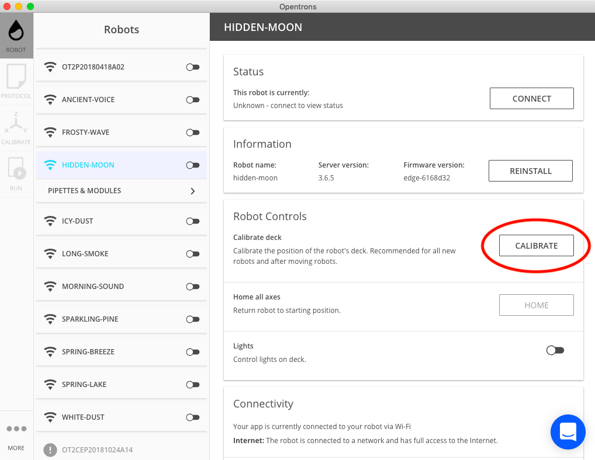 |
2. Retire todo el labware |
- |
Retire todo el material de laboratorio y los tipracks de la cubierta. 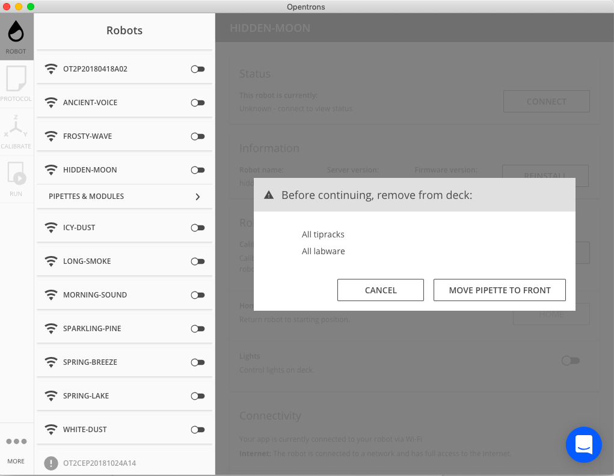 |
3. Seleccione "Mover la pipeta al frente" |
- |
Para iniciar la calibración de la cubierta - su pipeta izquierda se moverá ahora al frente y se bajará. 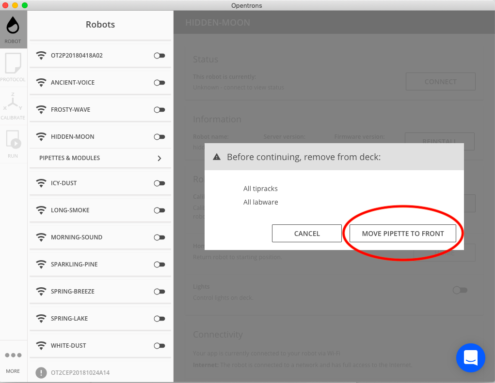 |
4. Coloque una punta de pipeta |
- |
El primer paso de la calibración de cubierta es colocar una punta en la pipeta descendida. 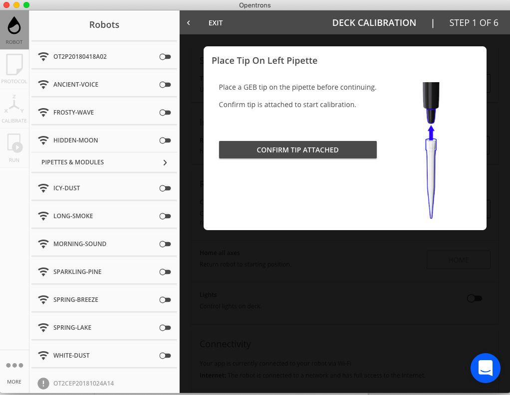 |
5. Seleccione "Confirmar la punta conectada" |
- |
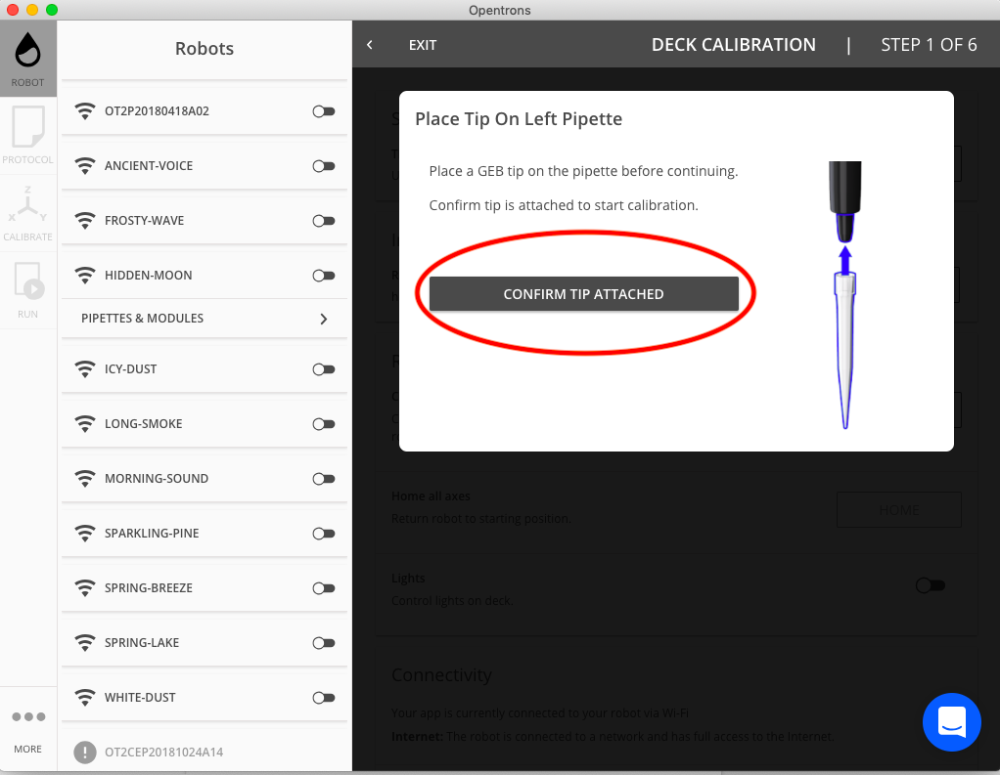 |
6. Mover la pipeta con la punta conectada para que quede al ras de la cubierta/deck. |
- |
El segundo paso de la calibración de cubierta es mover la pipeta con la punta conectada para que quede al ras de la cubierta usando las teclas de desplazamiento. Esto guardará los datos para el eje z. Se le dará la opción de cambiar el tamaño del salto de cada comando de desplazamiento (0,1 mm, 1 mm y 10 mm). |
7. Seleccione "Guardar calibración y continuar" |
- |
Una vez que se haya calibrado correctamente con el deck. 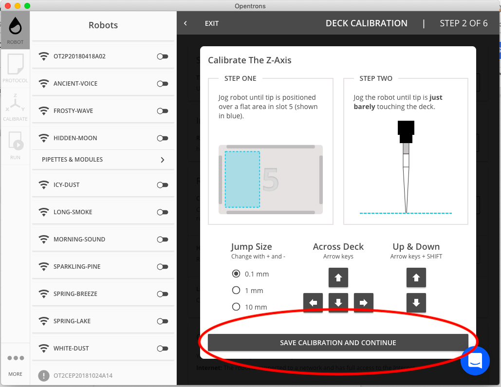 |
8. Calibrar al centro de la cruz grabada en el slot 1. |
- |
El terver paso de la calibración del deck es usar las teclas de desplazamiento para calibrar al centro de la cruz grabada en el slot 1. 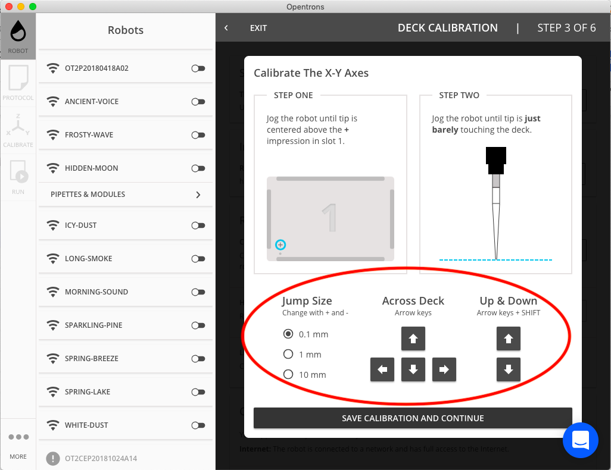 |
9. Una vez que tenga éxito, seleccione "Guardar calibración y continuar" |
- |
|
10. Calibrar al centro de la cruz grabada en el slot 3. |
- |
El cuarto paso de la calibración de la cubierta es usar las teclas de desplazamiento para calibrar al centro de la cruz grabada en el slot 3. |
11. Una vez que tenga éxito, seleccione "Guardar la calibración y continuar" |
- |
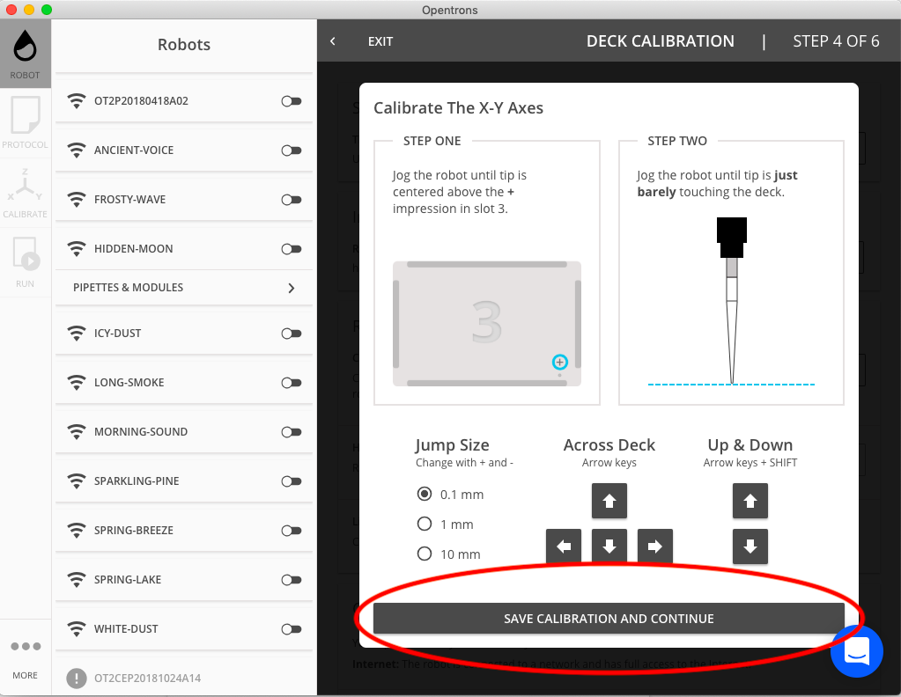 |
12. Calibrar al centro de la cruz grabada en el slot 7. |
- |
El quinto paso 5 de la calibración de la cubierta es usar las teclas de desplazamiento para calibrar al centro de la cruz grabada en el slot 7. |
13. Una vez que tenga éxito, seleccione "Guardar la calibración y continuar". |
- |
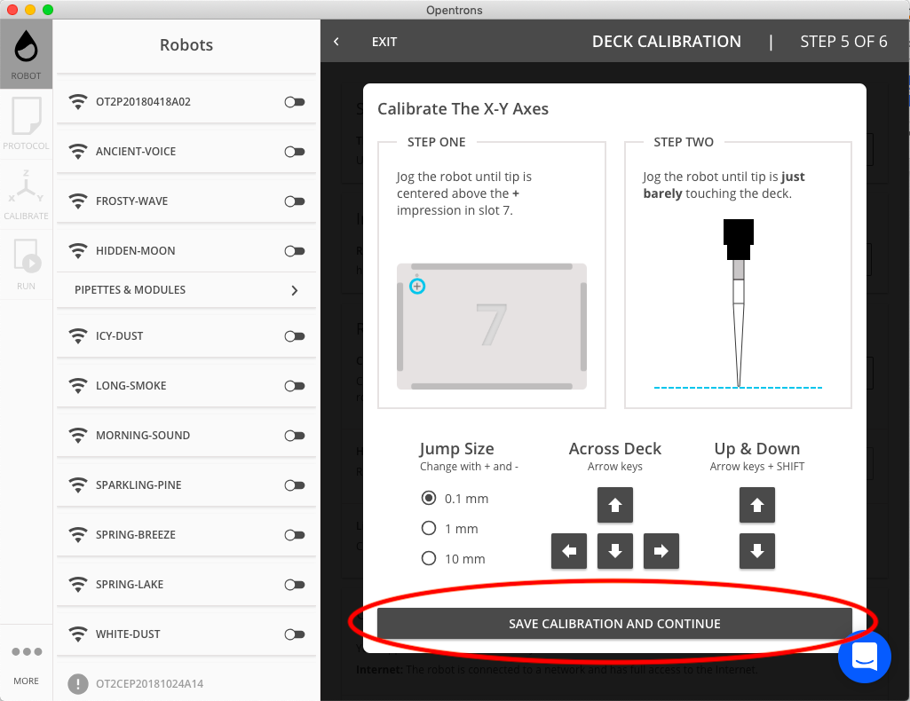 |
14. Retire la punta de la pipeta y seleccione "Finalizar y reiniciar el robot" para guardar los nuevos datos de calibración de la cubierta y terminar el proceso de calibración. |
- |
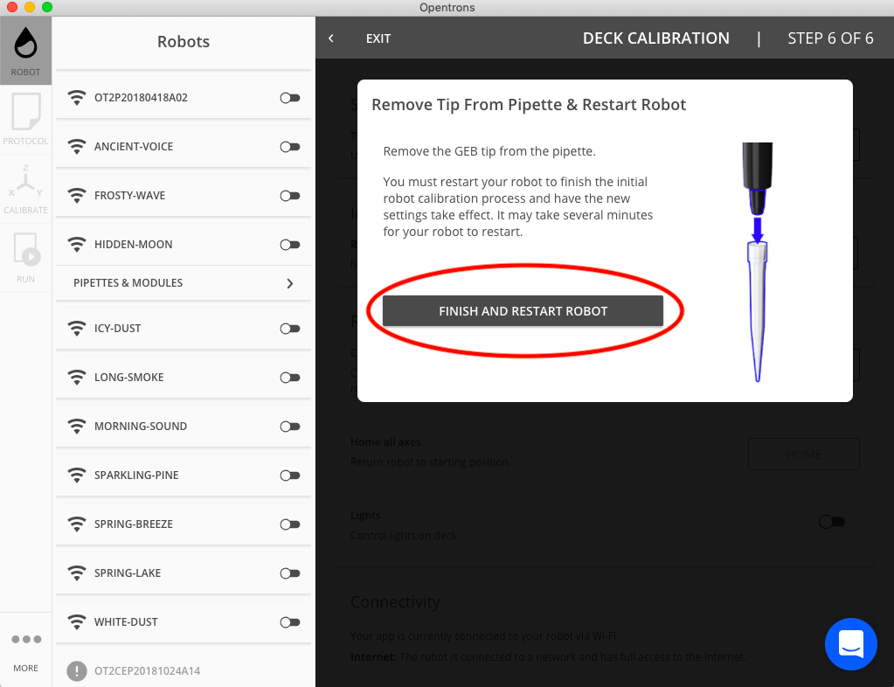 |
| El robot se reiniciará automáticamente. Este proceso no debería durar más de 1-2 minutos. Durante este tiempo, el robot perderá temporalmente la conexión, pero volverá a aparecer en la lista de robots después de un reinicio exitoso (por favor, observe que las pipetas se encuentran dentro del soporte para confirmar el reinicio exitoso del robot). Si el robot no reaparece, haga clic en "Intentar de nuevo" o en "Actualizar lista" en la aplicación, pero NO apague el robot. El ciclo de alimentación manual del robot durante este proceso podría terminar la calibración y dar lugar a problemas con el descubrimiento del robot. |
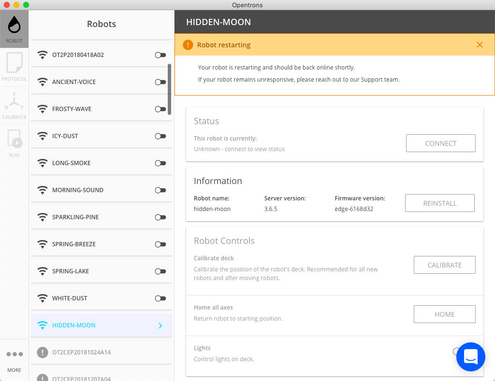
| Sólo si el descubrimiento del robot sigue fallando después de 5 minutos de reinicio, debería considerar la posibilidad de realizar un ciclo de energía del robot. En este caso, descargue los registros en la configuración avanzada y envíe el registro de la API y el registro de serie al soporte técnico de Opentrons a través del chat en vivo. |
Comprobar que la calibración es correcta
Para verificar la calibración del robot, subir el protocolo adjunto, y ejecutar la calibración de la pipeta y del labware cuando se requiera.
Ejecutar el protocolo move_to_crosses.py y comprobar visualmente que la punta toca todas las cruces.
Si la pipeta no toca alguna de las cruces
La punta de la pipeta debería estar en cada cruz con un margen de 1,5 mm. Además cualquier holgura debe ser estrictamente consistente entre cruces, 1,5 mm a la derecha de la primera cruz y 1,5 mm hasta la izquierda de la segunda cruz es inaceptable.
Suba el protocolo de comprobación de nuevo, ejecute la calibración de pipeta y de labware otra vez.
Observe si los resultados mejoran, si no lo hacen efectúe un reinicio a los ajustes de fábrica de calibración de pipeta a través de la aplicación, y una vez más calibre el deck.
Guardar la configuración calibrada
Si el robot toca correctamente todas las cruces, por favor, haga una copia de respaldo de esta calibración verificada tal y como hicimos con los otros ficheros json al grabar las calibraciones originales:
Abra el Jupyter Notebook:
http://robot_ip:48888
Abra un terminal (New > Terminal) e introduzca:
cp /data/deck_calibration.json /data/robot_settings.json /var/lib/jupyter/notebooks
Descargue, de Jupyter Notebook también, hasta su ordenador, los ficheros: deck_calibration.json y robot_settings.json
Y guárdelos en sitio seguro separados por cada uno de los robots.